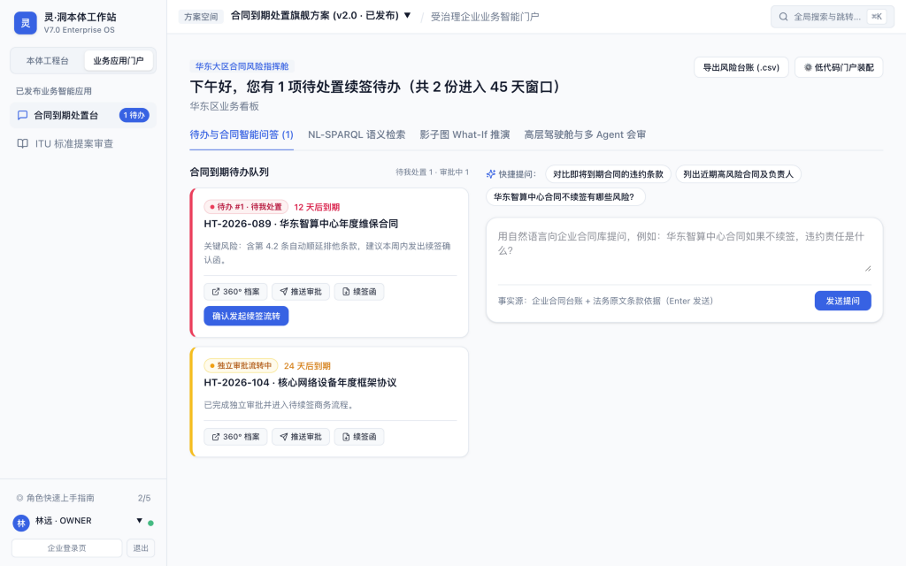

灵·洞本体工作站 V7.0 客户培训与操作手册
第 2 章 · 高管门户与自然语言问数
CHAPTER 02 · EXECUTIVE PORTAL & EVIDENCE Q&A
高管与业务必学：门户驾驶舱与证据溯源问数
适用：高管 / 业务负责人
适用：法务 / 财务 / 采购专员
2.1 经营门户驾驶舱：怎么看待办与全局风险
1
进入门户：登录后点击左侧栏顶部
业务应用门户，选择已发布的业务应用（例如合同到期处置台），左侧蓝底徽标会实时显示当前待处置数量（如1 待办）。2
处置临期待办：左侧“合同到期待办队列”按紧迫度自动置顶标红（如
HT-2026-089 · 12 天后到期）。点击卡片下方360° 档案可查看全景画像，点击确认发起续签流转或推送审批即可一键发起业务流。3
快速对话与导出：右侧可直接点击高频快捷提问芯片，或点击右上角
导出风险台账 (.csv) 带去线下会议。
2.2 自然语言问数（NL-to-SPARQL）与原文证据锚定
1
切换问数页签：在门户顶部点击
NL-SPARQL 语义检索，输入业务问题（如：“查询未来 30 天内到期的高风险合同及金额”），点击执行。2
核验结构化结果与子图：系统毫秒级返回结构化表格与图谱子图关联路径（例如 14 节点 · 10 条关系），直观展示合同、签约主体与到期日之间的精确关联。
3
点击 PDF / DOCX 原文证据锚点：在页面下方“制度文档原文证据锚点”区域，直接核对原始合同条款与字符坐标片段，确保每一条 AI 结论都有据可查、零幻觉。